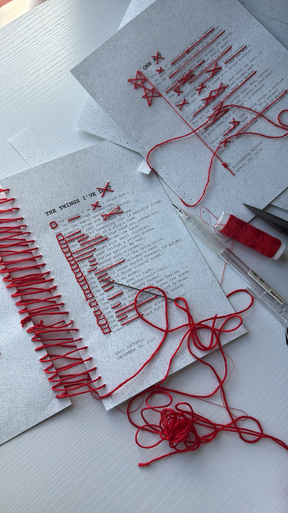
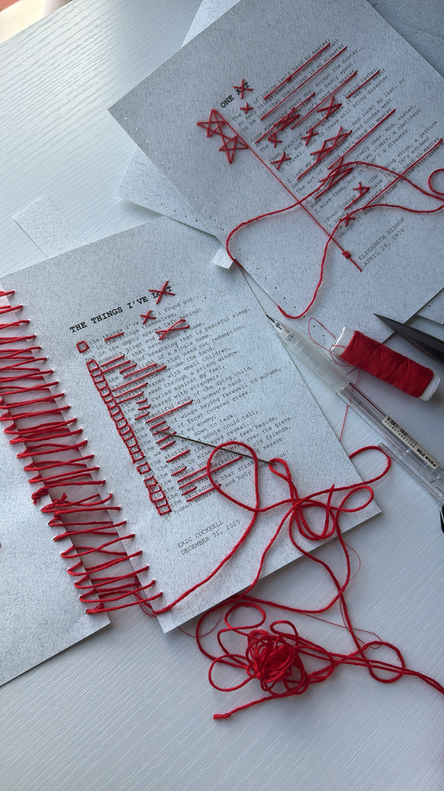

{kind=link}
Left Behind
Left Behind is a visual storytelling project that focuses on forgotten objects found in public spaces, thrift stores, and everyday environments. The project looks at items people lose, leave behind, or replace. A small traces of daily life that quietly hold meaning. These objects may seem ordinary or insignificant at first, but together they tell stories about presence, absence, and the passage of time.
App Walkthrough
App UI Screens
Typography
Each file uses a small range of type sizes to keep the hierarchy clear and the layout easy to look through. Different typefaces are used to reflect the different kinds of documents found within each case file.
Color Palette
Red is used as a visual thread—referencing investigation and connection—linking each object to an unseen story.
Object Investigation Files

Final Product Photography
 

Map

This map functions as a visual investigation. Red string connects each found object to its location, tracing patterns of loss and movement across the city.

Reflection
Left Behind focuses on everyday objects that are usually overlooked. I wanted people to slow down and notice the small details around them. Even simple, forgotten items can hold meaning and reflect moments from someone’s life. The project encourages a more thoughtful way of looking at the spaces we move through each day.